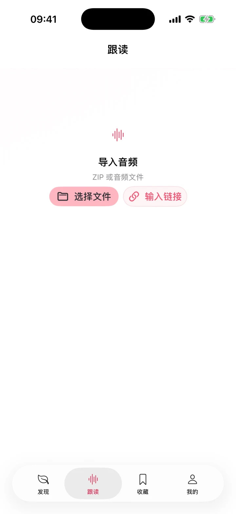

ZIP、音频或链接导入
选择 ZIP 或 MP3、M4A、WAV、AAC 文件，也可以输入含有效主机名的 HTTP/HTTPS 下载链接。音频由你准备，应用不附送教材。

Your audio, your pace
专门的音频学习空间不会假设每份教材都有文字稿，也不会把在线评分包装成必要条件。
选择 ZIP 或 MP3、M4A、WAV、AAC 文件，也可以输入含有效主机名的 HTTP/HTTPS 下载链接。音频由你准备，应用不附送教材。
选择音频段后可播放、暂停、拖动和调整速度，先熟悉节奏再开始跟读。
在设备权限允许时录下自己的跟读，立即回放对照；拒绝权限时也能继续听力练习。
听过、跟读与复习标记保存在设备内。播放器在大字模式下可滚动，单元、音频段与操作按内容展开；iPad 使用适合宽屏的布局。